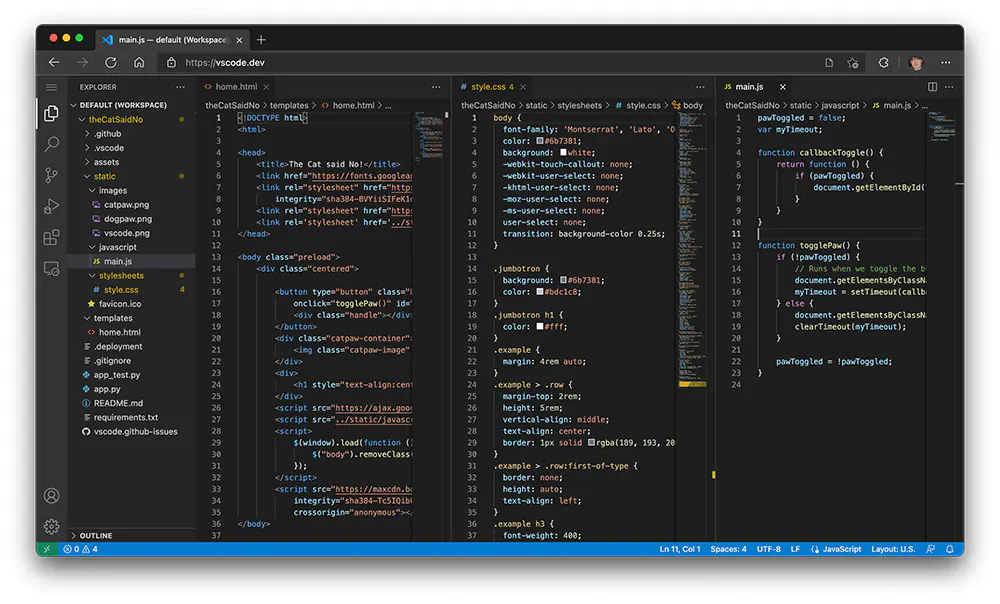
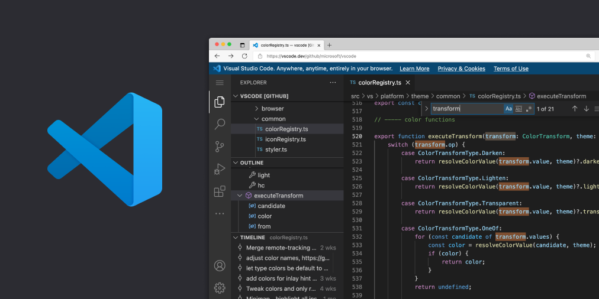

Extensions : Visual Studio Code dispose d'une vaste bibliothèque d'extensions pour étendre ses fonctionnalités.
Les développeurs peuvent trouver des extensions pour presque tous les langages de programmation,
ainsi que pour les thèmes, les outils de productivité, les fonctions de sécurité, les outils de gestion
de projets, etc. Les développeurs peuvent utiliser le Marketplace de Visual Studio Code pour trouver et installer des extensions.
Intégration GitHub : Visual Studio Code est étroitement intégré à GitHub, ce qui permet aux développeurs
de travailler facilement avec des dépôts Git et GitHub. Les développeurs peuvent effectuer des opérations
Git telles que la création de branches, la fusion et la comparaison de branches directement depuis Visual Studio Code.
Débogage : Visual Studio Code dispose de fonctions de débogage avancées pour les langages de programmation
pris en charge. Les développeurs peuvent déboguer du code en exécutant des tests, en fixant des points
d'arrêt et en inspectant les variables. Visual Studio Code dispose également d'une fonction de débogage
à distance qui permet aux développeurs de déboguer un code s'exécutant sur un autre ordinateur ou un autre dispositif.
Intégration Terminal : Visual Studio Code dispose d'un terminal intégré qui permet aux développeurs de
travailler avec des lignes de commande directement dans l'éditeur. Les développeurs peuvent utiliser
des commandes du terminal pour effectuer des opérations telles que la compilation du code, le lancement
de tests et la gestion de l'environnement de développement.
Intégration Live Share : Visual Studio Code dispose d'une fonctionnalité Live Share qui permet aux
développeurs de collaborer en temps réel sur le même projet, peu importe où ils se trouvent. Les
développeurs peuvent partager leur environnement de développement, discuter en direct et collaborer sur du code en temps réel.
Intégration Kubernetes : Visual Studio Code dispose d'une extension Kubernetes qui permet aux
développeurs de travailler avec Kubernetes directement depuis l'éditeur. Les développeurs peuvent
gérer des clusters Kubernetes, déployer des applications et déboguer des conteneurs.
Intégration Azure : Visual Studio Code est étroitement intégré à Microsoft Azure, ce qui permet aux
développeurs de travailler avec des services cloud Azure directement depuis l'éditeur. Les développeurs
peuvent déployer des applications sur Azure, gérer des ressources cloud et travailler avec des services
tels que Azure Functions et Azure App Service.
En somme, Visual Studio Code est une plateforme de développement de logiciels très polyvalente qui
offre de nombreuses fonctionnalités pour les développeurs de tous les niveaux. Les développeurs
peuvent profiter de la large gamme d'extensions, de l'intégration Git et GitHub, des fonctions
de débogage avancées, du terminal intégré, de la collaboration en temps réel, de l'intégration
Kubernetes et Azure pour améliorer leur productivité et leur efficacité.


